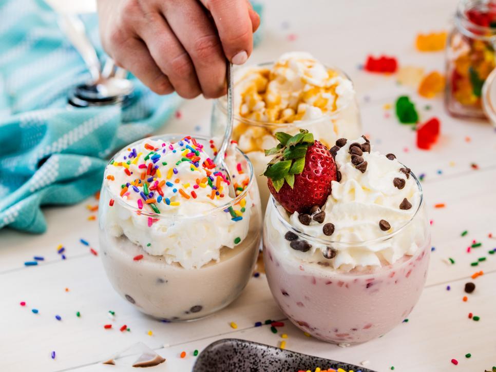

Ice Cream in a Bag
For the base ice cream: Stir the milk, sugar and vanilla together in a medium bowl. Pour 1/2 cup of the mixture into a sandwich-size resealable plastic bag. Make vanilla ice cream or add in your desired flavors to make mint chocolate chip, chocolate or strawberry ice cream. Tightly seal the bag. Put that bag into another sandwich-size resealable plastic bag and tightly seal. Repeat with the remaining batter and desired flavors. Place the ice and the salt into a 4-quart food storage container with a lid. Put the filled bags into the container and secure the lid. Shake the container until the mixture is frozen and resembles ice cream, about 5 minutes. Remove the bags with the ice cream in it from the outer bag and snip a large piece off one corner of each bag. Pipe the ice cream into small bowls. Copyright 2018 Television Food Network, G.P. All rights reserved.
Garlic and Herb Roasted Shrimp
Preheat the oven to 400 degrees. Melt the butter over low heat in a medium (10-inch) saute pan. Add the olive oil, garlic, rosemary, red pepper flakes, 1 teaspoon kosher salt, and 1/2 teaspoon black pepper and cook over low heat for one minute. Off the heat, zest one of the lemons directly into the butter mixture. Meanwhile, arrange the shrimp snugly in one layer in a large (12-inch) round ovenproof sauté pan (or 10 × 13-inch baking dish) with only the tails overlapping. Pour the butter mixture over the shrimp. Sprinkle with the sea salt and 1/2 teaspoon black pepper. Slice the ends off the zested lemon, cut five (1/4-inch-thick) slices, and tuck them among the shrimp. Roast for 12 to 15 minutes, just until the shrimp are firm, pink, and cooked through. Cut the remaining lemon in half and squeeze the juice onto the shrimp. Serve hot with the toasted bread for dipping into the garlic butter. "Make it Ahead" by Ina Garten © Clarkson Potter 2014. Provided courtesy of Ina Garten. All rights reserved